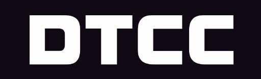

Home
Wilson is a 2nd year at Northeastern University studying Computer Science.
He is passionate about technology, sports, and food.
Professional

SSD Intern | Depository Trust & Clearing Corporation
July 2022 - August 2022
IT Intern & Managed Services Consultant | University of Massachusetts
Boston
July 2023 - August 2024

Activities
Fellow | Headstarter AI Software Engineering Fellowship
July 2024 - August 2024
Email:
wei.wi@northeastern.edu
LinkedIn
Projects
Autocomplete | Implemented an autocomplete feature using strings and
weights that predicts the rest of a word given a prefix
Eight Puzzle | Solve eight puzzle game using A* search algorithm